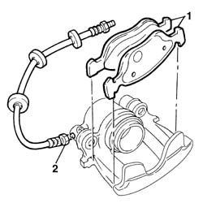
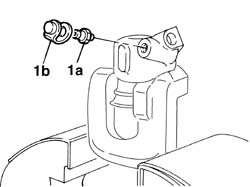
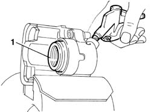
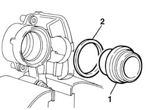

3310A38 front brake caliper, removed (one) l/h or r/h - overhaul
- Path
- Procedures > 33 BRAKES > 3310 DISC BRAKES > 3310A FRONT DISC BRAKES > 3310A38 front brake caliper, removed (one) l/h or r/h - overhaul
- Kind
- repair procedure (removal / refitting; the operation number is the code)
- Applies to
- all engines; all production periods
- Interactive page
- https://sloeber94.github.io/elrnDB-fDbl/en/#/2584623
Applies to: all engines; all production periods
1. Remove the two brake pads from the brake caliper.
2. Unscrew the connector on the caliper and remove the pipe.

Applies to: all engines; all production periods
1. Place the front brake caliper in the vice and remove the bleed valve (1a) complete with cover (1b).

Applies to: all engines; all production periods
1. Remove the piston from the front brake caliper casing using a jet of compressed air in the brake fluid inlet port.

Applies to: all engines; all production periods
1. Remove the piston protective boot.
2. Remove the gasket.

Applies to: all engines; all production periods
Fit the gasket in the housing in the front brake caliper casing.
Fit the protective boot in the piston splining.
Fit the piston - protective boot assembly in the front brake caliper casing.
Fit the bleed valve complete with cover.
Tighten the brake hose connector to torque.
 | Fastening | Component | Ø | Value (daNm) |
|---|---|---|---|---|
- | Connector | FITTING FOR PIPE TO CALIPER | M10 x 1 | 1.4 |
Position both brake linings in the seat on the brake caliper and fit the tabs on the seal into the piston.